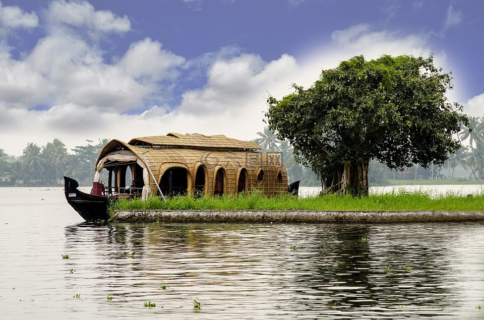

喀拉拉邦水上屋
喀拉拉邦回水區是一個由鹹水湖泊和運河組成的網絡，位於印度西南部喀拉拉邦的馬拉巴爾海岸，與阿拉伯海平行。它還包括一個由相互連接的湖泊、河流、
海灣和超過 900 公里（560 英里）的水道組成的迷宮系統，有時可與河口相比較。該網絡包括五個由人工和天然運河連接的大型湖泊，由 38 條河
流供水，橫跨喀拉拉邦近一半的長度。回水是由波浪和沿岸水流的作用形成的，在許多從西高止山脈流下的河流的河口形成了低屏障島。許多城鎮都是回水游船
的起點和終點。喀拉拉邦有 34 個回水區。其中 27 個位於阿拉伯海附近或平行。其餘7條為內河航道。回水區擁有獨特的生態系統，河流的淡水和阿拉伯海
的海水在此交匯。 Thanil Mukkom 附近修建了一座堰，以防止海水滲入更深的地方，並保持淡水完好無損。這種淡水被廣泛用於灌溉目的。許多獨特的水生生
物，如螃蟹、青蛙和彈塗魚，水禽，如燕鷗、翠鳥、蛇鱸和鸕鶿，以及水獺和海龜等動物，生活在回水區及其附近。棕櫚樹、露兜樹灌木、各種綠葉植物和灌木
沿著回水生長，為周圍的景觀增添了綠色的色調。
船屋
回水中的 Kettuvaram（喀拉拉邦船屋）是喀拉拉邦著名的旅遊景點之一。其中超過 2,000 艘船穿越水道。喀拉拉邦政府將旅遊船屋分為白金級、黃金級和白銀
級。傳統上，Khetvalam 被用作糧船，用於運輸從偏遠地區肥沃的田地收穫的稻米。 100 英尺（30 m）長的木質船體覆蓋著茅草屋頂，以保護其免受惡劣天氣
的影響。該船一度被用作皇室的居住區。船屋已為遊客改造成一座浮動小屋，設有睡眠區、西式衛生間、用餐區和甲板上的休息區。大多數遊客在船屋過夜。餐
食由隨行工作人員在船上準備，大部分為喀拉拉邦風味。屋形船有多種類型，可以根據家庭或團體的人數來租用。起居-用餐室通常至少向三個側面開放，可在
全天航行時欣賞周圍環境（包括其他船隻）的壯麗景色。它在用餐時間和晚上停止。日落後，船員們將提供點燃的線圈來驅趕蚊子。 Ketuvallam 是機動化的，
但通常以較慢的速度移動以實現平穩運動。所有 Ketuvallams 均配有發電機，大多數臥室均配有空調。有時，應顧客要求，關燈亮燈，營造出田園風光。 貝普
爾位於卡利卡特以南10公里（6.2英里）處，恰爾河河口，是著名的漁港、海港和造船中心。 Baypole 擁有 1,500 年的造船傳統。當地造船師和造船師的技
能受到廣泛追捧。